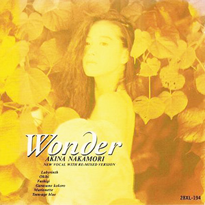

迷你专辑：第4张
发行年份：1988年
发行日期：6月1日
| 歌名 | 作词 | 作曲 | 编曲 |
|---|---|---|---|
| Labyrinth | 麻生圭子 | EUROX | EUROX |
| 燠火 | 吉田美奈子 | 吉田美奈子 | 吉田美奈子、椎名和夫（铜管編曲） |
| 不思議 | 吉田美奈子 | 吉田美奈子 | 井上鑑 |
| ガラスの心 | SANDII | 井ノ浦英雄・久保田真箏 | 井上鑑 |
| マリオネット | 安岡孝章 | 安岡孝章 | EUROX |
| Teen-age blue | 吉田美奈子 | 吉田美奈子 | 椎名和夫 |
首发规格：CD: 28XL-194，GOLD CD: 43XL-2001
唱片公司：Reprise Records，Warner Pioneer
排行榜：Oricon公信榜专辑周榜第2位
再发行：1991年7月17日 - CD: WPCL-425